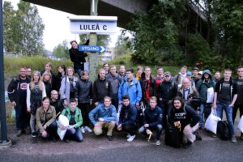

Trainhack 2017

År 2017 så var de dag för repris på Trainhack! Detta år var SJ AB med som en av arrangörerna, detta gjorde att Trainhack blev världens längsta tåg-hackathon.
Alla deltagare får 250 SEK att handla för på m.nu, detta passar väldigt bra för all deltagare som vill bygga någon typ av IoT-lösning och vill presentera en prototyp. Eller kanske behöver din telefon en ny laddare, eller powerpack? Allt du beställer kommer att levereras till din säng ombord på tåget.
Teamup
Lagen träffades i princip helt online via trainhacks slack-kanal inför eventet och lagen placerade i var sin kupé som lagen behöll hela resan. Det fanns några om ännu inte hade hittat sitt lag, de hittade sina lag-meldemar ombord på tåget.
Resan
7:e till 9:e September
Följ med på en tågresa genom 2000km av Sveriges vackra landskap tillsammans med 47 andra hackare och förändra kollektivtrafiken till det bättre.
Logi
Vi börjar 18:00 i Göteborg och avslutar i Uppsala den 9:e vid lunch. Rutten kommer gå via Luleå där vi gör ett stopp för aktiviteter och mat.
Wifi ombord
Det kommer att finnas WiFi ombord hela vägen samt lokal server för git repos m.m. allt detta tillhandahålls av Icomera.
Slack
Alla deltagare kommar att bjudas in till en Slack, där de som inte redan har ett lag kan hitta lagkamrater. Det går också bra att jobba med ett eget projekt.
Mat och dryck
Under hela resan så kommer det att bjudas på mat och dryck. Kom ihåg att berätta om eventuella kostavvikelser och eller allergier när du bokar din biljett.
Göteborg – Stockholm – Luleå – Uppsala

Torsdag (7/9)
18:00 – Inceckning Göteborg C
18:30 – Avgång Göteborg C
19:00 – Mat och dryck serveras ombord
19:51 – Avgång Skövde C (ev. påstigning)
22:40 – Avgång Stockholm C (ev. påstigning)
Fredag (8/9)
07:30 – Frukost ombord
11:11 – Ankomst till Luleå C
11:45 – Presentation från Luleå Tekniska Universitet, LTU
12:30 – Lunch
13:30 – Fortsatt hackande
17:31 – Avgång från Luleå C
18:30 – Mat ombord på tåget
Lördag (9/9)
05:30 – Ankomst till Uppsala C
07:00 – Frukost
09:00 – Presentationer från lagen
11:30 – Prisutdelning och avslutning
Trainhack 2017 avslutas 11:45 lördagen 9/9.
Video
Läs mer
Om Trainhack hos Järnvägsnyheter kolla också på Finalister för årets Trafiklabhjälte 2017 som Samtrafiken nominerade till. Läs också om hur
Oxyfi var med på Trainhack 2017. IIS öppna data blog har ytterligare matnyttig information under Hackaton på rätt spår,
du kan också lyssna på Morgon i P4 Norrbotten (08:e september 06:00 efter 18 minuter).
Bilder

De vinnande projekten
Social app
Tågmöte vann pris för bästa sociala app, de skapade en ombordportal för interaktion och frågor som resenärer kan använda för att interagera med varandra. Icomera kommer att anordna en workshop med det vinnarna för att i framtiden kunna erbjuda liknande tjänster till sina kunder. Läs mer om lösningen på Anders Fricks blogg Tidsdödare prisad på rullande hack. Laget fick också en resa och deltagande på Junction 2017 i Helsingfors som pris från 46elks, samt trainhacks vandringspokal.
Vardagsapp
De två rävarna – Dumbom vann priset för bästa vardagsapp, DumBom visar när bommarna är nere, det kan du använda för att slippa hamna i kö framför nedfällda bommar så att du kommer i tid.
Rese- och Tåginformation
eTraveli lag 1 – Säg det med en push, fick pris för enkelheten och det stora stödet för olika plattformar samt användbarheten.
Djupgående analys av APIer
eTraveli lag 2 – Kollektivt resande med spår i tiden, fick priset för den bredd på APIerna som de hade djupdykt i.
Enklast användarupplevelse
Lag Samtrafiken – Alexa departure, fick priset för att användningen av produkten var intiutiv och enkel.
Trygghetsskapande
Piece of Luggage, Peace of Mind, Piece of Cake, fick priset för produktens stora trygghetsskapande. Lösningen innebär att telefonen piper om ditt bagage lämnar tåget utan dig eller du lämnar tåget utan ditt bagage.
Planeringsstöd
I denna kategori så delade två lag på priset: Simtrain och Daniel och Anton med projekten Simtrain och LostTrackOfTime. SJ AB kommer att anordna en workshop tillsammans med lagen för att utbyta erfarenheter om hur planeringsstöd kan utformas.
Tågnördigaste underhållning
Rebecka – TågQuiz, i detta spel får du lära dig känna igen den tekniska beteckningen på svenska tågtyper. Nördigt men kul som tusan så ladda ner och testa vad du kan också!
Kupémys ♥️
Team suntrip – vann pris för absolut mysigaste kupén med Neopixel i taket. Här fanns också lödverkstad för de som behövde.
Social reseplanerare
Travel Sisters – En reseplanerare som hjäper dig träffa personer som ingår i dina sociala nätverk såsom Facebook och Twitter.
Gruppunderhållning
4macs – Ett spel som kan spelas av 4 spelare samtidigt, till exempel vid resa tillsammans på tåg. Källkoden till spelet finns på Github så att vem som helst kan bygga vidare på det.
Visualisering
Trainspotting, en Flight Radar fast för tåg använder realtids-API från Oxyfi för att presentera position och hastighet för tågen. Laget vann en workshop med Oxyfi, läs mer om projektet hoss Oxyfi.
Presentation av API-data
The Entertrainers – Entertrainment, en app som kan presentera data från flera olika APIer för att underlätta resandet.
Konceptförslag
Kevin – Förbättringar nattåg, för sin presentation om nattågens möjligheter.
Resestöd
Linkon – Min Resa ett koncept på hur en mer komplett reseapp skulle kunna se ut.
Alla som gjort detta möjligt
46elks AB
SJ AB
eTRAVELi
Trafiklab
Oxyfi
Railit Tracker AB
Microsoft
Sandelin Webbyrå
Icomera
m.nu
Västtrafik
BlåTåget
Taxi Stockholm
Luleå tekniska universitet
eMaintenance365 AB
silverrrail